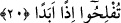

kulların işidir. Hayır sâhiplerinden gelebilecek yardımlara değil de, sırf Allah’a
güvenenlerin âdetidir. Tevekkül, maddi sebepleri yerine getirdikten sonra olur.
Mesnevî de şöyle der:
Tevekkül ediyorsan çalışmak husûsunda et
Kazan da sonra Cebbâr’a dayan!”
“Çalışıp kazanan Allah’ın sevgilisidir” hadisini dinle,
Tevekkül edeceğim diye sebeplere sarılmakta tembellik etme.
Ashâb-ı Kehf’in rızık konusunda ve her işlerinde Allah’a mütevekkil oldukları şu
sözlerinden anlaşılmaktadır: “Rabbiniz size rahmetini yaysın ve işinizde sizin için
fayda ve kolaylık sağlasın.” (el-Kehf 18/16)
Âyette sözü edilen şehir, Tarsus’tur. Câhiliyye döneminde adı Efsus idi. el-Kâmûs’ta
şöyle denilir: “Tarsus, önceleri Ermenilere aid olan verimli bir yerdi. Asrımızda
müslümanların elindedir.”
“De baksın, (şehrin) hangi yiyeceği daha temiz” yiyeceklerin hangisi daha temiz,
helâl ve daha ucuz “ise size ondan erzak” insan bedeninin hayatiyetini sağlayan bir
azık “getirsin”
Kâşifî’şöyle der: “Onların zamanında o şehirde îmân ettiklerini gizleyen bazı
kimseler vardı. Bu sözleri ile o kimselerin kestiklerini satın almalarını
kasdetmişlerdir.”
“Ayrıca, nâzik davransın (gizli hareket etsin)” aldanmamak için ya da tanınmamak
için işini gizlice görsün.
Mütekaddimînden birisi şöyle demiştir: “Kur’an’ın harflerini saydım. Tam ortasını
Kehf sûresindeki bu âyetin “__WORD__ ve’l-yetelattaf” kelimesinde buldum. Bu kelimedeki
ikinci “lâm” harfi Kur’an’ın ilk yarısında, “tı” ve “fe” ise ikinci yarısındandır. Nitekim
el-Bostan’da böyle denilmektedir.
“Ve sakın sizi” şehir halkından “kimseye sezdirmesin.” Çünkü, sizinle ilgili
haberlerin yayılmasına sebep olur. Yâni içinizden şehre inecek olan, bilmeyerek böyle
yapmasın. Herhangi bir kasdı olmadığı halde gizlendiğimiz yerin bilinmesine sebep
olacak bir şey yapmasın. Bu sebeple âyette aralarından şehre gönderilen kişinin, halka
kendilerini sezdirmesi “iş‘âr (bildirme)” olarak nitelenmiştir. Çünkü bu yönde
yapılacak bir hatâ bir nevi bildirmeye sebep olacaktır. Âyetteki “nâzik davransın”
sözü, gidecek kişinin durumlarını bildirmemesi için bir uyarı, “sakın sizi kimseye
sezdirmesin” sözü de öncekini te’kiddir.